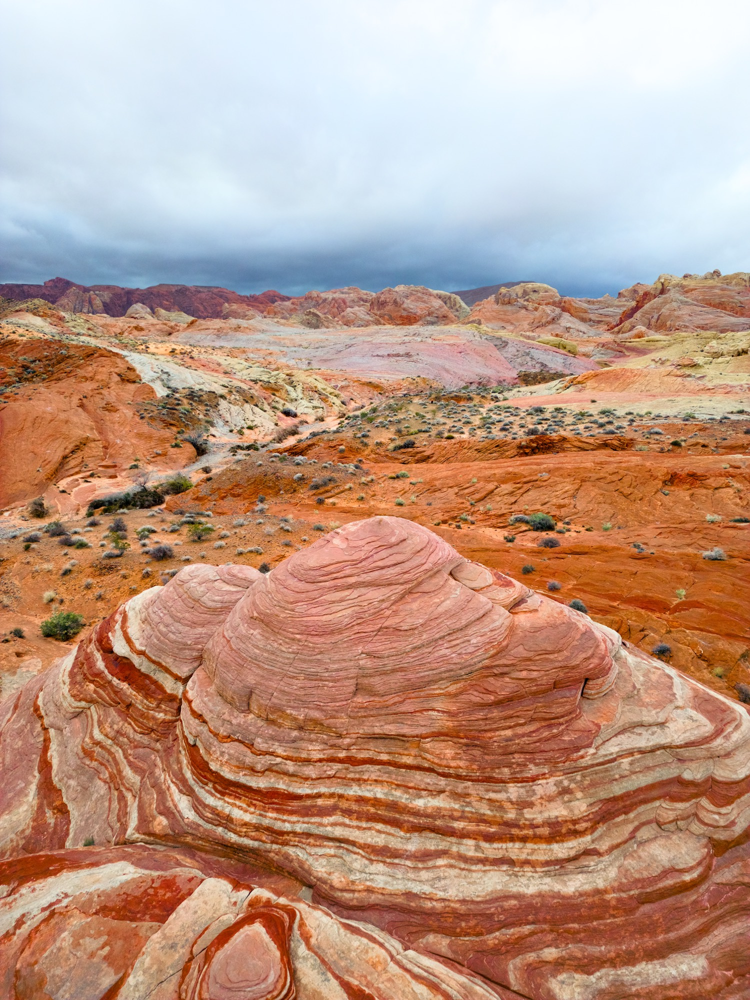

Vistas: Beauty of the Desert
A solo Nevada landscape exhibit, plus the brand, website and print collateral I built for it. Seventeen photographs, one identity, wall to web.

A solo show, built like an institution.
Vistas: Beauty of the Desert is my own landscape photography exhibit, seventeen large-format photographs of Nevada, from the red sandstone of the south to the alpine north, showing at the West Charleston Library Art Gallery in Las Vegas.
For this one I was not only the photographer. I shot it, curated it, branded it, built it and printed it. I designed the full identity, built an eight-page editorial website, and produced the physical collateral, wall cards, QR codes and a media kit, so a self-funded solo show could carry the polish of an institutional one.
Photographs of Nevada, shot and curated into a single south-to-north journey across the state
Editorial website designed and built end to end: scrolling gallery, exhibit details, media kit and photobook
Public exhibit, open 77 days, June 16 to September 1, 2026, spanning July 4th and America's 250th
No museum's design department to lean on.
A solo artist mounting a public gallery show is competing for attention with institutions that have staff for exactly this. The photographs are only half of it. A real exhibit also needs an identity, wall labels people can read and scan, a digital home that does the work justice, and a clear path to learn more and buy prints.
I had no team and no budget for any of that. So the challenge was not just hanging good photos. It was giving a one-person show the coherence and polish of an institutional one, across the wall, the web and the printed page, without anything feeling stitched together.
Photography is an act of slowing down and paying attention to the surroundings. My intention is to bring these landscapes closer, to reduce the sense of separation between viewers and place.
From my artist statementPhotographer, designer, developer, all of it.
I owned every layer of this exhibit: I shot the photographs over years of fieldwork, curated the seventeen, designed the identity, wrote and built the website, and produced the print collateral that hangs in the gallery. With no handoffs, the show and the way it is presented became a single, continuous design problem.
Two decisions shaped the whole thing.
One editorial voice across every surface
I built a single, restrained identity, warm off-white type on near-black, Times italic for the captions and Inter for everything functional, and carried it from the gallery wall cards to the website to the QR codes. Whether you are standing in the room or scrolling on your phone, it reads as one exhibit.
A website built like a walk through Nevada
Instead of a photo grid, I built the gallery as a scroll down the state, south to north. Each of the seventeen images arrives with its own motion, with short written passages in between, notes from the drive. The site does not just display the work; it recreates the experience of standing in the landscape and slowing down.
How the show came together.
This was not a studio project. It was years of driving, planning and producing before a single frame ever hit a wall. The path from an idea to an approved public exhibit ran roughly like this.

Built to print big
Shot on a full-frame Sony A7R IV, sixty-one megapixels, chosen so the work could be printed large without losing detail. A long lens to compress distant ridgelines and a wide lens for the big open foregrounds covered the range Nevada demands.
Finding the places worth the drive
Researched Nevada well beyond the postcard spots: canyons, dunes, alpine lakes, wetlands and dark-sky sites, many of them hours from the nearest town. Built a shortlist of locations worth chasing the light for.
Routes, road trips and time in the field
Planned routes and multi-day road trips across the state, often returning to the same place for the right conditions. Most of these images are the product of patience: driving far, waiting on light, and shooting at the edges of the day.
Statement, intent and the library
Reached out to the Las Vegas-Clark County Library District, wrote the artist statement and exhibit intent, and went through their review to secure the West Charleston Library gallery, turning a personal body of work into an approved public exhibit.
Selecting, printing and framing
Pulled the full body of work down to the final seventeen, ordered large-format prints on glossy photographic paper, and ordered and prepared the frames, the point where the photographs stop being files and become objects for a wall.
Hanging the show
The last step is the install: hanging all seventeen, mounting the wall cards and QR codes, and the opening reception at the gallery in June 2026.
A one-person show that reads like an institution.
A real, public exhibit
Accepted into a public library gallery and open free to the public for 77 days, June 16 to September 1, 2026, with the run timed to span July 4th and America's 250th anniversary. The show has since been renewed for a second run at the Clark County Library, September 22 to December 15, 2026.
One identity, wall to web
A complete, self-built system, brand, eight-page website, wall cards, QR codes and media kit, that holds together across every surface, giving a solo show the coherence of a staffed institution.
The site is the second gallery
The website extends the exhibit past the library walls: a scrollable walk through Nevada anyone can experience from anywhere, with each photograph available as a print.
Proof of range
Concept, photography, curation, brand identity, editorial web and print, carried end to end by one person. The kind of full-stack ownership that is hard to fake and rare to find.